Quick Examples¶
Here is a gallery of all the quick examples demonstrating what PyVista can do!
All of these examples are live and available on MyBinder!
Mesh Creation¶
These examples demo how to read various file types into PyVista mesh objects, create meshes from NumPy arrays, and how to create primitive geometric objects like spheres, arrows, cubes, ellipsoids and more! Once a mesh is loaded, it is ready for plotting with just a few lines of code - explore these examples to get started with using PyVista for your data.


Filtering¶
These examples show case various mesh analysis and filtering routines present in the Filters module. Explore these demos to perform tasks such as:
Slicing and cutting meshes
Computing mesh properties like volume, area, and surface normals
Mesh decimation
Extract regions of one mesh using another mesh’s surface
Ray tracing through surface meshes
Resampling and interpolating scalar/vector values across meshes
Integrating a vector field to generate streamlines
Smoothing surfaces
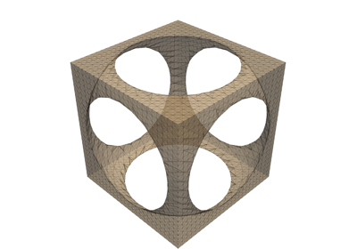
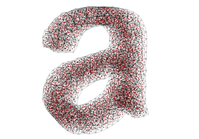
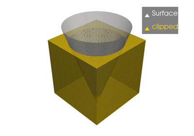
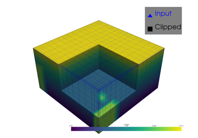
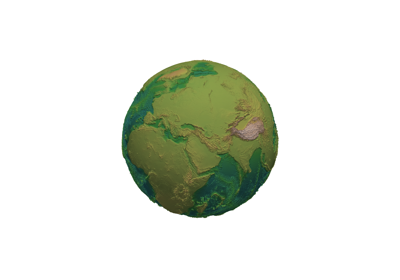
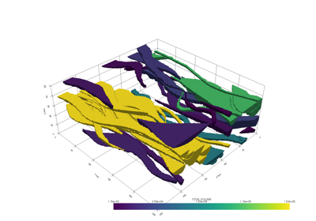
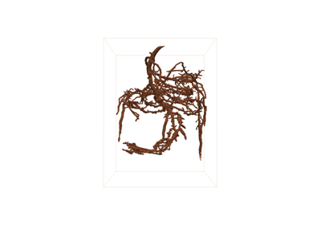
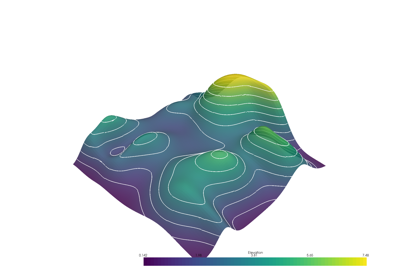
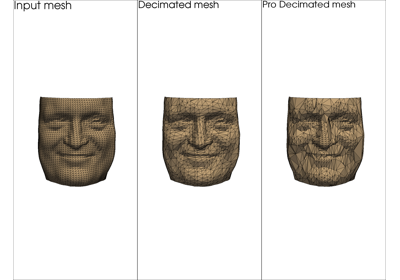
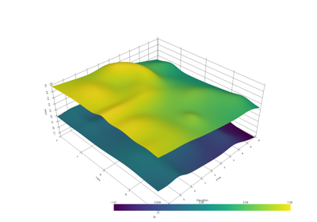
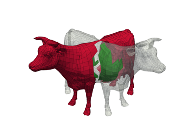
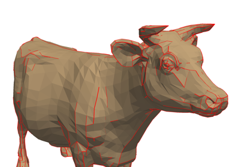
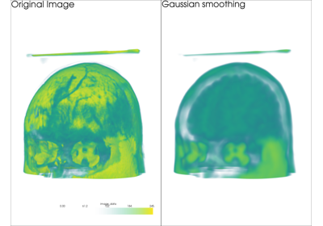
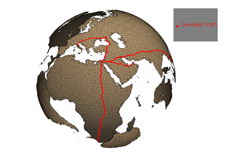
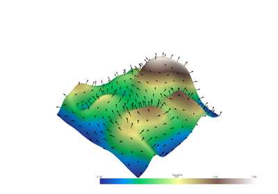
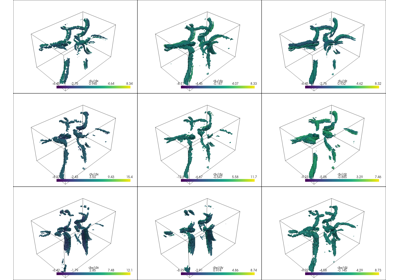
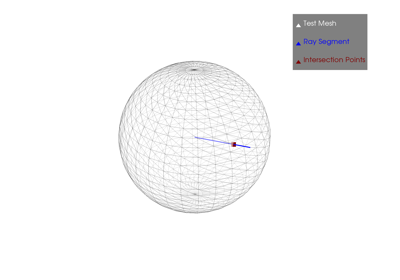
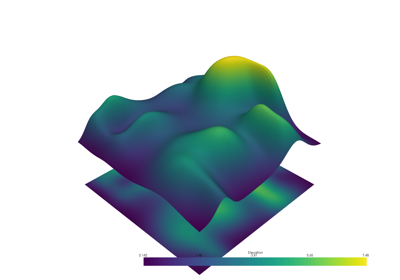
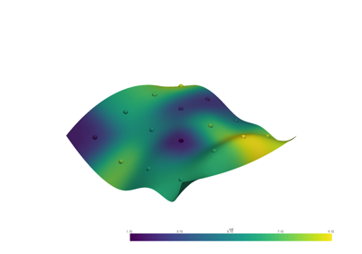
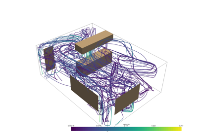
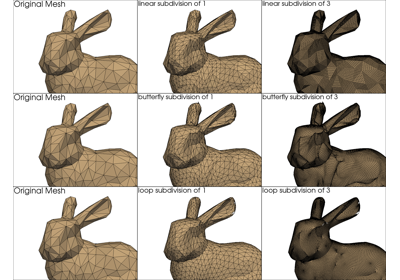
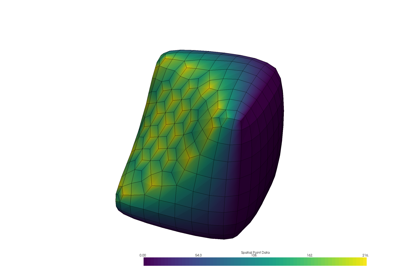
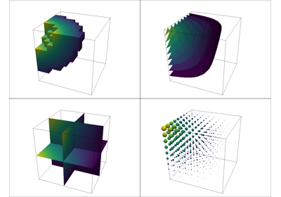
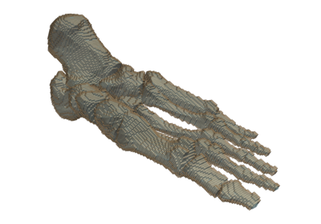
Plotting¶
These examples show case many of the possibilities for altering how you display spatial data. Explore these examples to learn how to leverage our powerful 3D plotting routines to perform tasks like:
Color mapping scalar values with
matplotlibcolormapsCreating animations as GIFs or movie files
Showing the edges and nodes of different mesh types
Use sophisticated lighting techniques like smooth shading or Eye Dome Lighting
Glyph a vector or scalar field on a mesh (place/orient a mesh on anther mesh’s nodes and scale/orient based on data values)
Label points in 3D space along side your meshes
Creating side-by-side comparisons
Making a dataset transparent or using a scalar value to map opacity
Adding textures/images draped over a mesh (texture mapping)
Rendering a depth image
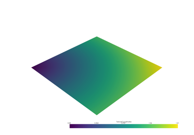
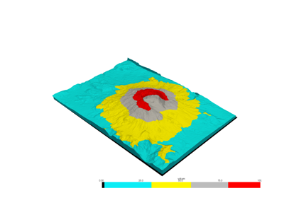
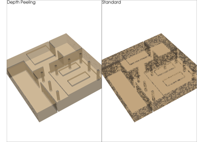
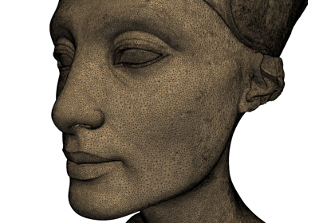
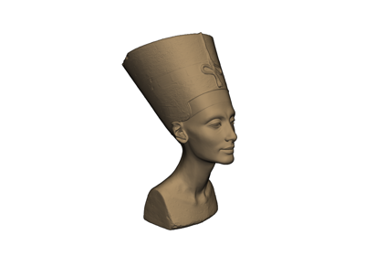
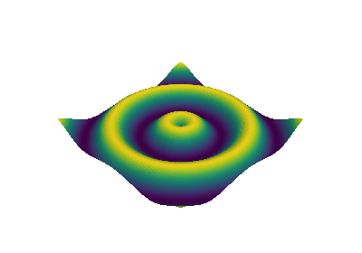
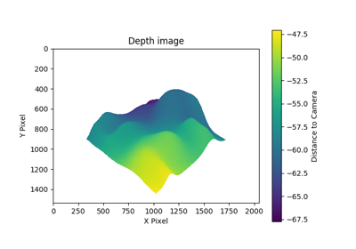
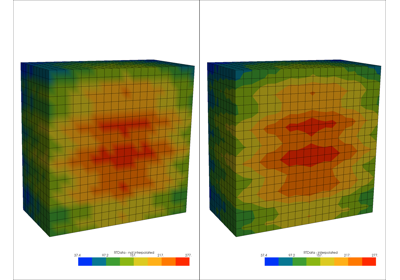
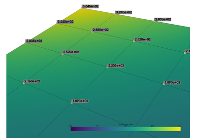
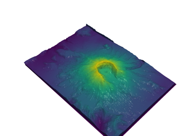
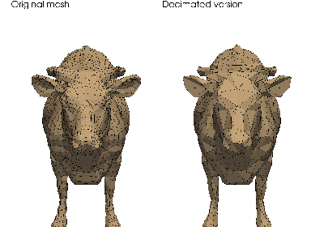
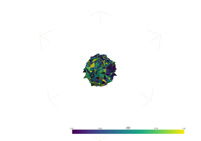
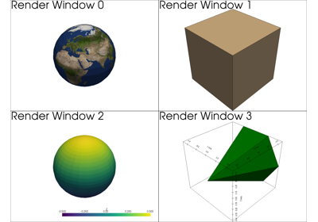
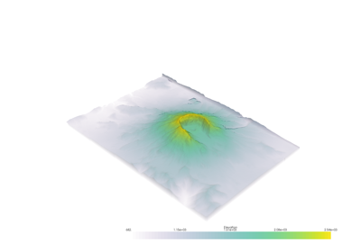
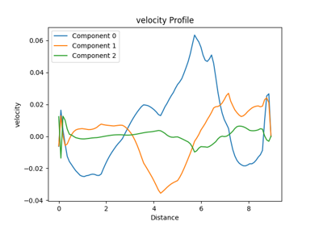
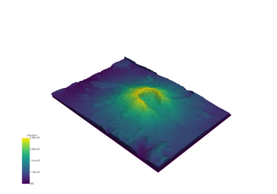
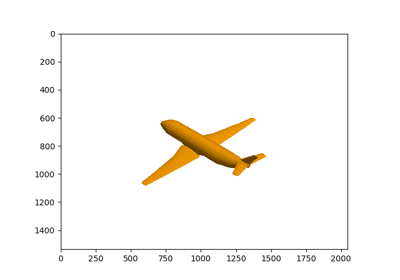
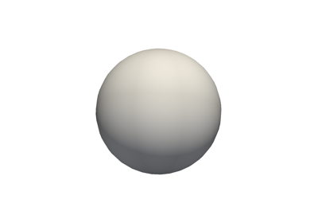
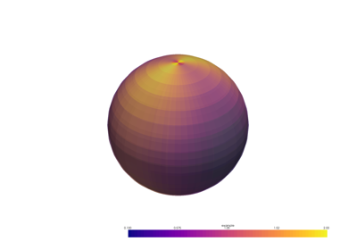
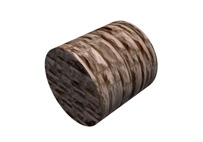
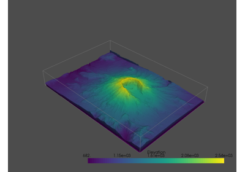
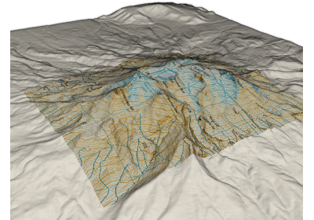
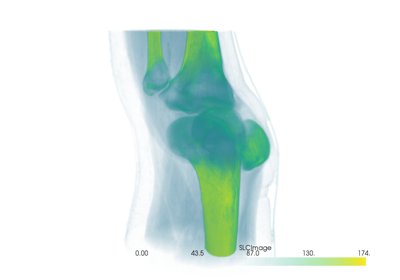
Advanced¶
Include here are few longer, more advanced examples from our users and developers.
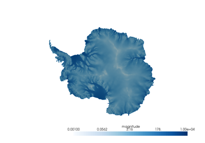